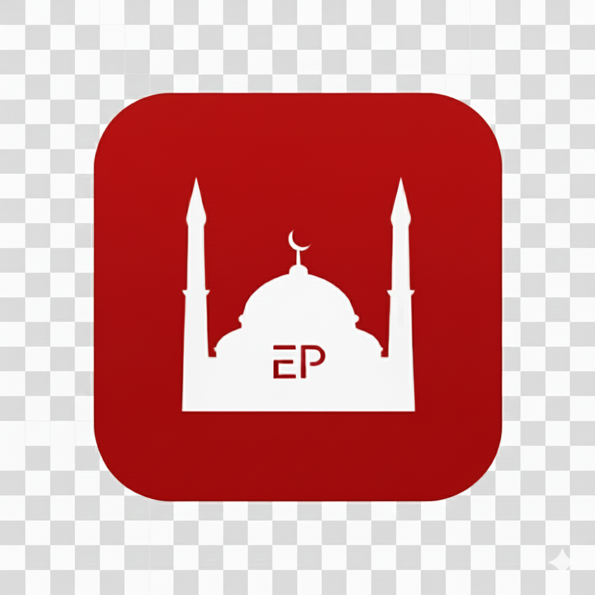

Güncel namaz vakitleri
Konumunuza göre güncel ve doğru namaz vakitlerine hızlıca ulaşın. Şehir seçimi ve otomatik konum desteği ile her zaman doğru saati görün.

Ezan PlusTürkiye için namaz vakitleri, ezan alarmı ve kıble pusulası.
Konumunuza göre güncel namaz vakitleri, özelleştirilebilir ezan bildirimleri ve kolay kullanılan kıble pusulası tek bir sade uygulamada.
Ezan Plus, yakında Google Play'de kullanıma sunulacaktır. Uygulama yayına alındığında, aşağıdaki butondan mağaza sayfasına ulaşabilirsiniz.
Kendi logonuzu kullanmak için yalnızca bu web sitesinin ana klasörüne logo.jpg adında bir görsel yerleştirmeniz yeterlidir.
Konumunuza göre güncel ve doğru namaz vakitlerine hızlıca ulaşın. Şehir seçimi ve otomatik konum desteği ile her zaman doğru saati görün.
Namaz vakitleri için ezan sesli bildirimler alın. Sessiz saatler ve tercih ettiğiniz vakitler için hatırlatıcıları kolayca yönetebilirsiniz.
Cihazınızın pusulasını kullanarak kıble yönünü pratik şekilde bulun. Net ve sade arayüz sayesinde nereye dönmeniz gerektiğini anında görün.
Gereksiz karmaşadan uzak, hafif ve hızlı çalışan bir arayüz. Gündelik kullanım için tasarlandı; aradığınız bilgiye tek adımda ulaşın.
Bu Gizlilik Politikası, Ezan Plus mobil uygulamasını ("Uygulama") kullanırken kişisel verilerinizin nasıl işlendiğini açıklar. Uygulamayı kullanarak bu politikada belirtilen uygulamaları kabul etmiş sayılırsınız.
Uygulama, temel işlevleri sunmak için sınırlı veri kullanır:
Konum verisi, yalnızca namaz vakitlerini ve kıble yönünü size en doğru şekilde gösterebilmek amacıyla kullanılır. Konum izni vermek tamamen isteğe bağlıdır ve cihaz ayarlarından istediğiniz zaman kapatabilirsiniz.
Uygulama, namaz vakitlerinde ezan alarmı gönderebilmek için bildirim izni isteyebilir. Bildirim ayarlarını cihazınızın ayarları üzerinden dilediğiniz zaman açıp kapatabilirsiniz.
Uygulama, hata takibi, analiz veya bildirim hizmetleri için üçüncü taraf servisler kullanabilir. Bu servisler, kendi gizlilik politikalarına uygun şekilde veri işleyebilir. Kullanılan üçüncü taraf hizmetler Google Play açıklamalarında veya uygulama içi bilgilendirmelerde belirtilir.
Uygulama genel kitle için tasarlanmıştır ve bilerek çocuklardan kişisel veri toplamayı hedeflemez. Ebeveynler ve velilerin, çocukların uygulama kullanımlarını takip etmeleri tavsiye edilir.
Geçerli mevzuat kapsamında, kişisel verilerinizle ilgili olarak aşağıdaki haklara sahip olabilirsiniz:
Bu haklarınızı kullanmak için bizimle iletişim bölümünde yer alan e‑posta adresimiz üzerinden irtibata geçebilirsiniz.
Bu Gizlilik Politikası zaman zaman güncellenebilir. Önemli değişiklikler yapıldığında, uygulama içinden veya ilgili platformlar üzerinden bilgilendirme yapılabilir. Değişiklikler, yeni sürüm yayınlandıktan sonra yürürlüğe girer.
Gizlilik politikası veya kişisel verilerinizle ilgili tüm sorularınız için bize aşağıdaki e‑posta adresi üzerinden ulaşabilirsiniz:
E‑posta: ezanplusapp@gmail.com
Her türlü soru, öneri ve geri bildiriminiz için bize e‑posta gönderebilirsiniz.